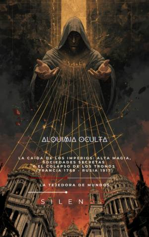

Illuminati
ALQUIMIA OCULTA : La Caída de los Imperios: Alta Magia, Sociedades Secretas y el Colapso de los Tronos
Sinopsis
¿Cómo cayeron realmente los tronos que dominaron el mundo? Alquimia Oculta no es solo un libro de historia; es una disección profunda de la "tecnología del secreto" y de cómo las sociedades iniciáticas moldearon el destino de Europa desde la Revolución Francesa hasta el colapso del Imperio Ruso en 1917. A través de una narrativa fascinante y rigurosa, esta obra revela cómo el poder dejó de residir únicamente en los palacios para trasladarse a las sombras de las logias, los gabinetes rojos y las redes clandestinas. Desde los códigos de los Iluminados de Baviera hasta la influencia de figuras como Filippo Buonarroti o Rasputín, el lector descubrirá los hilos invisibles que conectaron Madrid, París y San Petersburgo en una trama de subversión y alta política. Lo que descubrirás en este libro: La Arquitectura del Poder Invisible: Un análisis detallado de cómo el secreto se convirtió en una herramienta operativa para desafiar a las monarquías absolutas. El Laboratorio de la Igualdad: Cómo las logias funcionaron como espacios de ensayo para las democracias modernas y la ingeniería social. Estrategias de Infiltración: Las técnicas de diplomacia paralela, microingeniería lingüística y propaganda que erosionaron la confianza pública en los antiguos regímenes. De la Masonería al Socialismo: El vínculo estructural entre los ritos de iniciación antiguos y los movimientos revolucionarios que transformaron el siglo XX. Perspectivas Éticas: Una reflexión necesaria sobre la opacidad, la transparencia y cómo estas dinámicas históricas resuenan en nuestra actual era digital. ¿Por qué leer Alquimia Oculta? Este libro es esencial para amantes de la historia, interesados en la ciencia política y buscadores de la verdad detrás de las teorías de conspiración. Manuel Rodsua y Cristina Lobo ofrecen una obra que equilibra la frialdad del análisis clínico con la intensidad del relato histórico, permitiendo al lector comprender que la política moderna no se mide solo en batallas abiertas, sino en silencios, códigos y manufacturas de lo oculto. Atrévete a mirar detrás del tapiz y descubre el sistema operativo que fundó la modernidad.